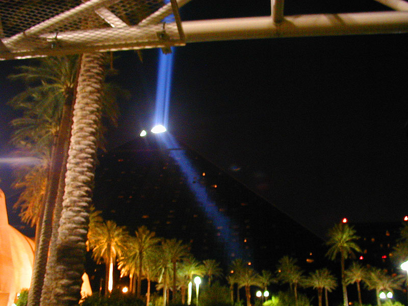

The LuxorThat beam of light from the top of the pyramid is visible for miles around. If you watch CSI you may have noticed it in the opening movie. I *think* that it comes from spotlights on the ground that then get angled up from mirrors as that would allow them to place the lights on the ground for easier access and safer mooring, but I am not sure. This photo seems to support that theory. As you can see by all the lighted portions of the pyramid those are all rooms along the top of it. |
back to main page |
|  |